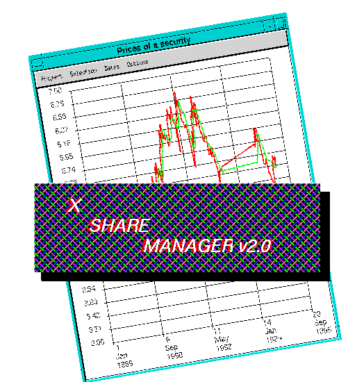

If you a starting out should first read the beginners guide to XSM. If you are already familiar with xsm then information on all the menus is also available in the overview. The macro language is described in the XSM Macro language reference section.